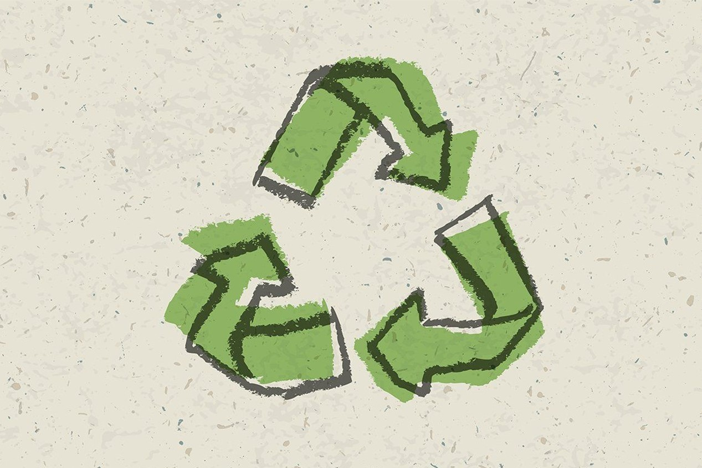
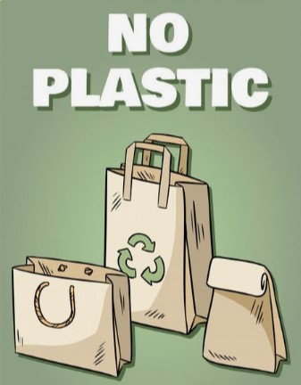

El Consumo responsable tiene que ver con entender que los recursos naturales pueden agotarse. También tiene que ver con comprar de acuerdo a las tres erres (Reducir, Reutilizar y Reciclar) o elegir una marca por su precio y su calidad a la vez que por su respeto medioambiental o las condiciones de trabajo en su elaboración.

¿Qué necesitamos saber para poder consumir responsablemente?
La idea de un consumo responsable, consciente y crítico, empleando eficientemente los recursos de los que se dispone, tiene que ver con un modelo de consumo respetuoso con el medio ambiente que satisfaga las necesidades básicas de una comunidad o población y reduzca los excesos y el daño ambiental.

Como ejemplos se podría mencionar una dieta balanceada con comida saludable, comprar alimentos que no hagan daño a las personas o el medio ambiente, considerar adquirir frutas y verduras de agricultores locales, hacer un uso eficiente de los recursos naturales y energéticos, o considerar opciones de movilidad que no contaminen, entre otros.